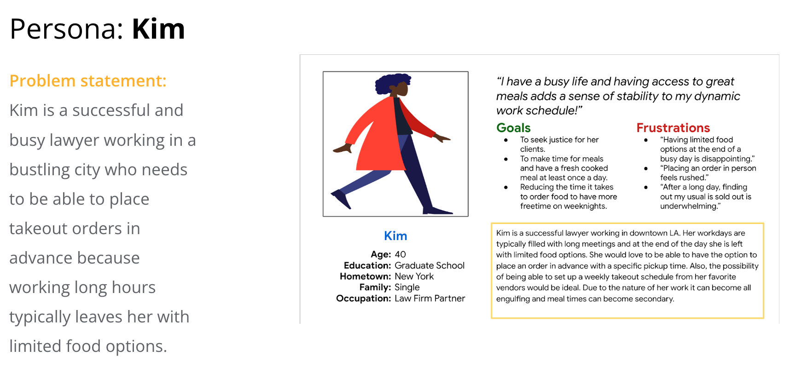
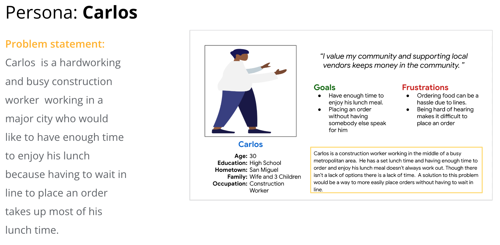
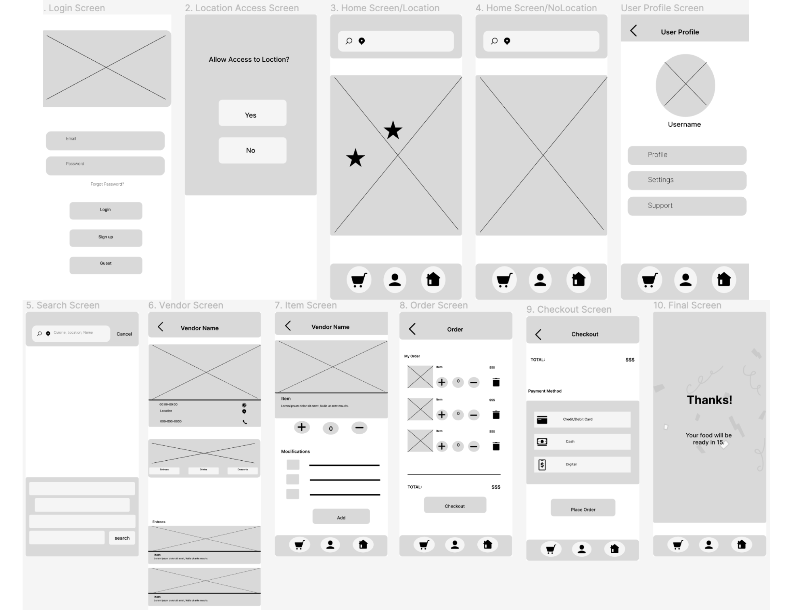

The competitive audit further highlighted the existence of a market gap in the food ordering industry, with the gap being a lack of food ordering apps that provide their users with the option to order from local street vendors.


The report below features the outcome of the analysis performed after the market research.

Since the app hasn't been developed yet, the user pain points were generated by conducting usability testing on competitor apps. By observing how users interacted with the competitors products, three pain points stood out: privacy concerns, features relating to vendor location, and account creation.

User Needs
With the product and user research established, the following sections focus on user needs. All of the information that was gathered during research is put into action through the development of the user pain points, the user flow, personas, and the user journey map.
The design of the user flow is loosely based on competitor designs and observations on how users interact with competitor apps. It follows a familiar design with minor improvements, like asking users if they are ok with granting the app access to their location. This decision was made early on in the research stage of the design thinking process empathize phase. While interviewing users, many mentioned feeling a lack of privacy when apps would immediately have access to their locations. Which is why providing users with the option to deny the app access to their location restores users with a sense of autonomy and privacy. In short, the user flow serves as an outline, early in the design process, with an intuitive path for the user to follow.

The following personas are a follow-up to the earlier mentioned user interviews, in particular their interaction with competitor apps, and target user research. These personas are a representation of the target audience and are a valuable tool used to make design decisions that best capture user needs--highlighted by the traits represented by the personas.

I opted for a future state user journey map due to not having a tangible product to test. This type of journey map could be described as a type of user journey map mockup, since it portrays the best case journey for a product that doesn't exist yet. It also provides a cohesive design direction with the help of information collected from field study interviews, which were all collected by observing users interact with competitor apps. The journey map also best depicts the features that differentiate the street vendor app from those of competitors. By providing direction and a shared vision the future state journey map is a culmination of the initial planning of the design direction for the product--there will be a lot more iterating, since the design phase is the next step in the process.

Design
The design phase is the where numerous iterations take place. We begin by brain storming ideas, in our case, creating a couple of storyboards was the best idea. Paper wireframes are another simple low risk brainstorming tool that speed up the design workflow, they are any early information architecture planning aid. The remaining steps are a cyclical iteration of perfecting digital wireframes and improving prototypes through the implementation of usability studies. At the end of the design process we are left with a functional user friendly design, though there is always room for improvement.
Without a tangible product, creating a couple of storyboards was the best way to illustrate how users might interact with the future app.


Paper wireframes are extremely reliable and accessible forms of design, not only do they serve as a form of brainstorming but also help get the design ball rolling. The paper wireframes below helped my design process in two ways. First they helped me identify possible issues earlier, by quickly coming up with multiple designs for a single screen I was able to decide which designs would work best for the user needs. Second, paper wireframes allowed me to primarily focus on the screen layouts. Focusing on the structural placement of elements as opposed to detailed components allowed me to center my attention on whether the elements placed on the screen served a clear purpose. In the case of detailed element information I took the liberty of making annotation-evident on the picture provided-, which will be refined in the digital wireframes.

There was one iteration for the digital wireframes. Below is an an image of the first digital wireframe, which has certain key aspects but is also a refined version of the paper wireframes.
 LO-fi Prototype linkThis usability study's research goals focused on wether the app's design layout was intuitive. Below there are images of the UX research study plan, the usability study notes, the affinity diagram, and the findings, all in that order.
Prior to actually conducting the usability study, it's necessary to create a research study plan which ultimately serves as a blueprint for the study.

While conducting the usability study, it's necessary to keep track of the users experience with the app as they move through the tasks and the usability notes do just that. Though the image below only illustrates the notes for one user, each users experience is observed and noted.

The affinity diagram below was used to organize the observations collected from the usability study and help develop insights.


The first design iteration focused on the three insights comprised of the information collected from the usability study. Based on the theme that users struggled to find the vendor profile a more intuitive layout where the vendor profiles were populated on the home screen was developed. Another update focused on placing an add button on all food items so users could easily add them to their cart. The final insight that led to a revision centered on simplifying the checkout process into a single screen. The image below illustrates a side by side comparison of the changes made to the lo-fi wireframe after it's first iteration.

Once satisfied with the lo-fi wireframe the mockup development follows and in this project's case, an extremely simple sticker sheet is created alongside the mockup. To me, it made sense to work on both of these simultaneously because the color palette and typography decisions changed multiple times. For instance, there were multiple occasion's when I would decide to experiment on the sticker sheet prior to applying the changes on the mockup.


The image below illustrates the pathways between the apps screens.

For this usability study I decided to focus on visual design principles due to the fact that, refining the apps design optimizes the user experience. The design principles that were implemented include emphasis, visual weight, and scale.
Moving on to the documents that are a part of this section, they include the ux research plan, the usability notes, the findings, and the design iteration placed in that order.


Final Product
After numerous iterations, below there's a short video of a user moving through the app.
Takeaways